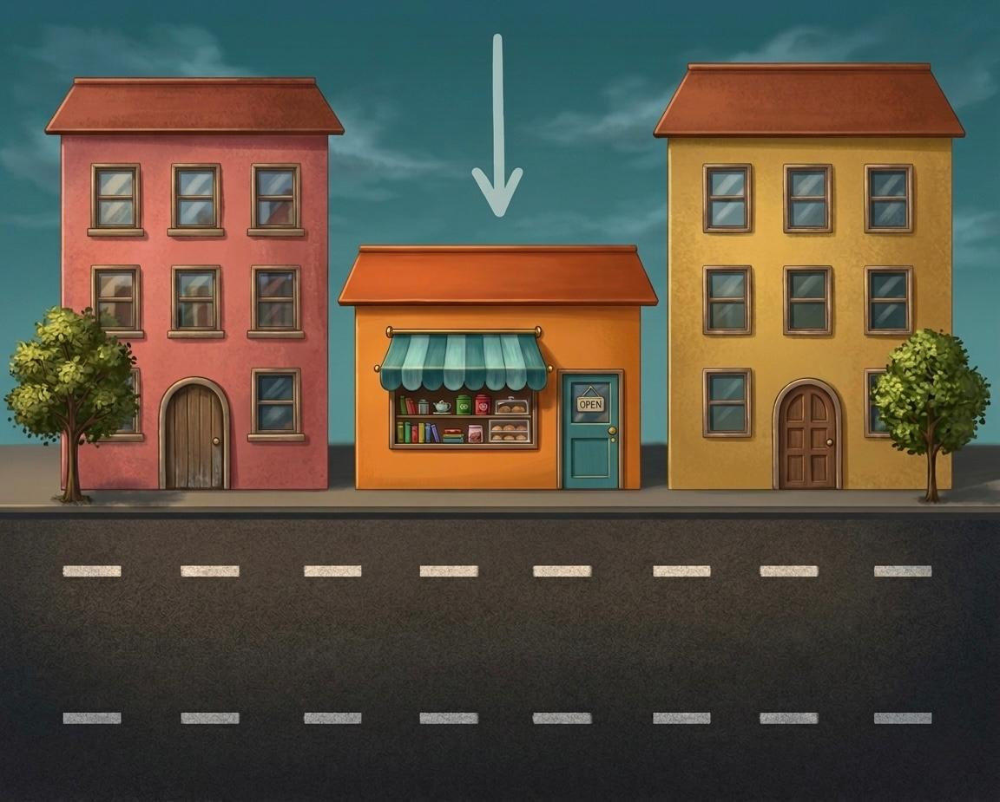
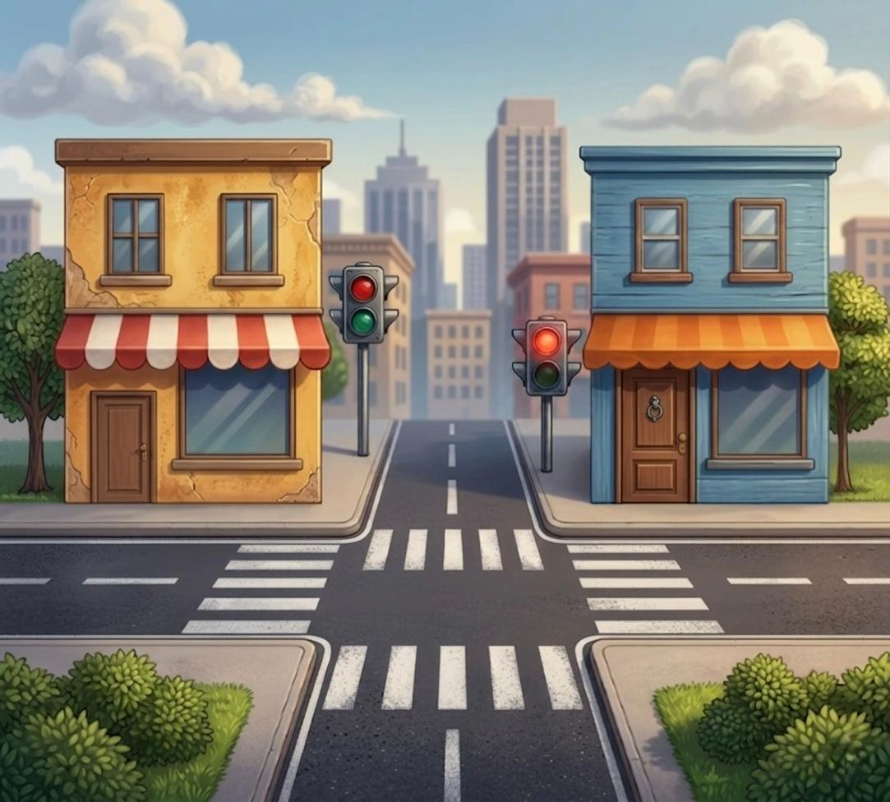

PREMIUM ENGLISH
Master the essential vocabulary needed to navigate the city, describe locations, and give clear, executive directions.
We use turn left and turn right when giving directions or describing movement. These phrases tell someone which direction to go at a corner or intersection.
Go straight means to continue forward without turning. It is useful when you want someone to keep going ahead.

Between means "in the middle of two things or places." It shows that something is in the center of two other objects.

Opposite means that something is on the other side. We often use it when talking about streets or rooms facing each other.
Practice using these prepositions to give directions or describe locations!